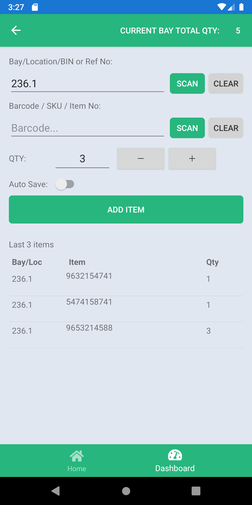
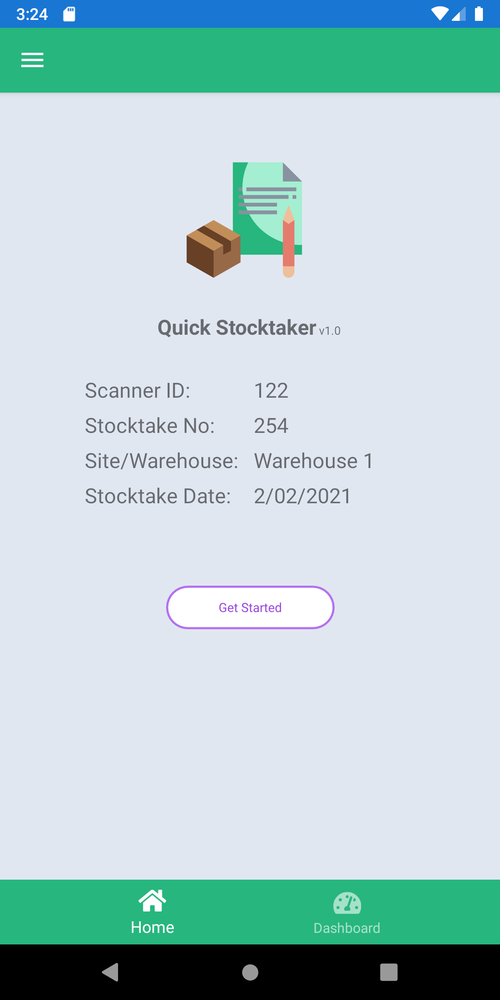
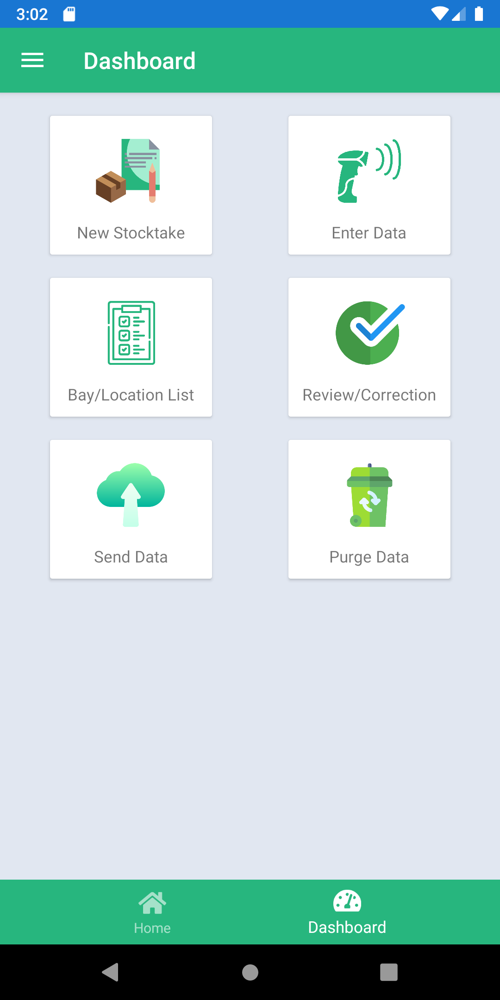
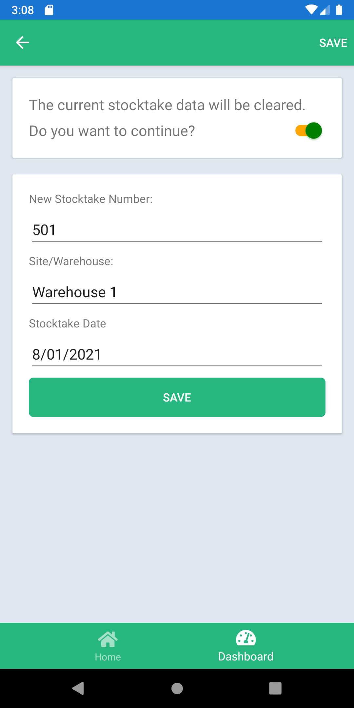
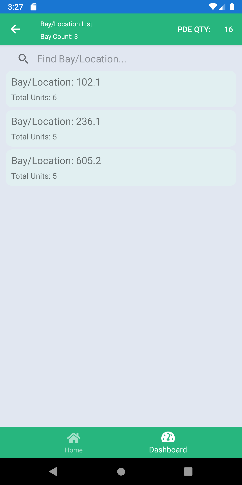
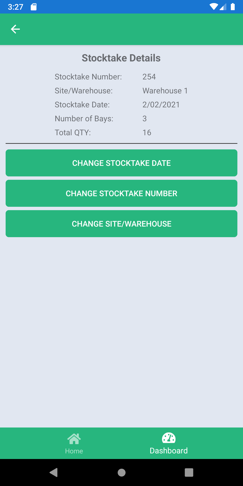
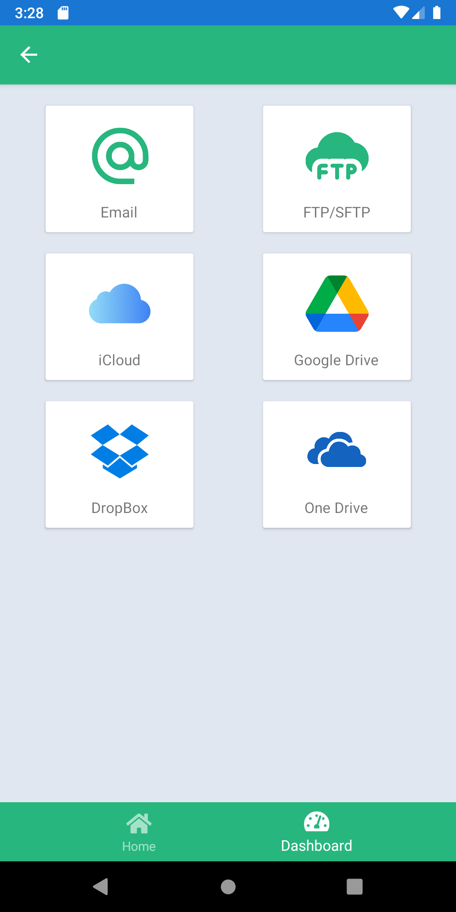

Create a stocktake with number, site, and date
Free Android stocktake app
Stocktake from your phone
Scan barcodes, group counts by bay, review mistakes, and send stocktake files from the floor.

Android
Built for mobile stock counts
Offline counts
Local stocktake data on the device
CSV, Email, FTP/SFTP
Send data through practical channels
Stocktake first
A count path that matches the floor
Start the job, scan the shelves, correct the data, then send the finished count.
Scan or type the bay, location, bin, or reference
Scan each barcode with the phone camera
Adjust quantity with stepper controls
Review bays, items, and total quantity
Export, email, or upload the finished count
Real app screens
Every major action stays visible
Frontline users can see the current bay total, recent items, review totals, and correction actions without leaving the stocktake flow.





Made for counts, not admin clutter
Camera barcode scanning
Use the phone camera to capture product barcodes without extra scanner hardware.
Manual entry fallback
Type a barcode or bay when a label is damaged, dark, or out of reach.
Bay and location control
Group counts by bay, bin, location, or reference so teams can reconcile the floor.
Correction before sending
Review counted bays, edit item quantities, rename locations, or delete mistakes.
CSV export
Create a stocktake file that can be shared or saved for back-office systems.
Email and FTP/SFTP
Send counted data by email or upload it to a configured server folder.
After the count
Export the result in the way your site already works
Quick Stocktaker supports CSV sharing, email delivery, and FTP/SFTP upload, so the final count can move from the floor to the back office.

✓ Local count data
Count stock even when the network is not the main thing
Counts are kept on the device during the job. Internet is only needed when a team chooses email or FTP/SFTP sending.
Simple setup before the floor opens
Device ID
Name the scanner so exported counts can be traced back to the phone.
Continuous Scan Mode
Keep scanning one barcode after another for faster shelf work.
Email Config
Set host, port, username, password, and sender details.
FTP/SFTP Config
Choose FTP or SFTP, then add host, port, folder, username, and password.
Mistakes can be fixed before the file leaves the device
The app includes review screens for changed dates, changed stocktake numbers, changed sites, edited quantities, renamed bays, and deleted mistakes.
Missing stocktake number
Start a stocktake before scanning items.
No camera access
Allow camera permission in the phone settings.
Wrong quantity
Open review, edit the item, and save the corrected count.
No data to export
Add counted items before opening Send Data.
Bring stocktake back to the phone
Use Quick Stocktaker to count inventory, review totals, correct mistakes, and send the final stocktake file.